Visual C++ Redistributable Package instaliacija
- Pirma, reikia susiinstaliuoti reikalingas programas. Du Visual C++ Redistributable Package ir TIK PO JŲ instaliuoti WampServer.
- Visual C++ 2013 Redistributable Package
- Pažymime varnelę ant "I aggree" ir spaudžiame "Install" mygtuką.
- Toliau spaudžiame "Yes" ir turėtų prasidėti instaliacija.
- Jei rašo "Setup successful", galima spausti "Close" ir uždaryti instaliavimą.
- Visual C++ 2015 Redistributable Package
- Nuorodoje spaudžiate "Download". Pasirenkate x64 failą (nebent Windows'ai pas jus 32bitų). Parsisiuntę atidarot.
- Pažymime varnelę ant "I aggree" ir spaudžiame "Install" mygtuką.
- Toliau spaudžiame "Yes" ir turėtų prasidėti instaliacija.
- Jei rašo "Setup successful", galima spausti "Close" ir uždaryti instaliavimą.
WampServer instaliacija
- Dabar, jau galima instaliuoti WampServer iš šios nuorodos:
- WampServer parsisiuntimo nuoroda
- Parsisiuntę atidarykite ir spauskite "Yes", tada palikite "English" kalbą ir spauskite "Ok".
- Pažymėkite varnelę "I accept" ir spauskite "Next"
- Spauskite vėl "Next". Instaliacijos vietą galite palikti kokia yra iš pradžių (C:\wamp64) ir spauskite "Next"
- Palikite "Default installation", nieko žymėti nereikia. Jei kurių nors iš papildomų reikės - jas galėsime prisidėti ir vėliau. Spaudžiame "Next".
- Spaudžiame "Next" ir tada "Install". Turi prasidėti instaliacija.
- Baigus instaliacijai, jūsų klaus ar norite naudoti Internet Explorer kaip pagrindinę WampServerio naršyklę. Spauskite "Yes", jei nenaudojate patys asmeniškai explorerio ir norite pasikeisti į kitą. Paspaudus "Yes" atidarys failų naršyklės langą - suraskite kur yra įrašyta jūsų norima naršyklė.
- Po to klausia ar palikti Notepad'ą kaip teksto redaguoklę - jį galite palikti. Spausti "No"
- Toliau spaudžiame "Next" ir "Finish"
- Paleidžiame programą. Sumyrksi keli juodi cmd langai - jų išsigąsti nereikėtų. Ir jei serveris pasileido nepriekaištingai, tai apatiniame kairiame ekrano kampe, kur yra visų paleistų programų ikonėlės, turėtų atsirasti žalia W ikonėlė.

- Jei ikona raudona - tai reiškia, jog kažkas neįsirašė tinkamai arba dėl trukdžių neveikia. Problemų gali būti įvairių, tad belieka pasakyti, jog neveikia ir ieškoti problemos
WAMP Serverio ir duomenų bazių įvadas, teorija
- Mes dirbsime PhpMyAdmin programoje. PhpMyAdmin programą paleidžia per naršyklę ir tai iš tiesų yra administravimo įrankis puslapyje. Su juo galime administruoti bei analizuoti mūsų duomenų bazę.
- WAMP Serverio trumpinys reiškia Windows Apache Mysql. Tad, kai instaliavome WAMP serverį, mes instaliavome ir Apache serverį ir Mysql duomenų bazę ir PHP scriptus.
- Šie trys mechanizmai yra pagrindiniai internetinių puslapių pagrindai. Tiesa, šiais laikais yra jau ir kitų kombinacijų, tačiau tai (wamp) yra viena iš ilgiausiai bei solidžiausiai išsilaikiusių kombinacijų.
- Apache serveris, tai tam, jog mūsų projektą/puslapį, galėtume patalpinti serveryje. Praktikoje to reiktų, jog žmonės puslapį galėtų pasiekti. WAMP serveris padaro tik virtualų puslapį, tad jo niekas nepasieks, tačiau jis puikiai tinka testuoti tokio pobūdžio projektams. Tiesa, pakoregavus WAMP Serverio nustatymus galima serverį padaryti ir viešu kitiems žmonėms.
- MySQL tai yra SQL kalbos variantas. SQL kalbų pagrindą mokinsimės toliau, o MySQL tai ir bus variantas, kurį mokinsimės bei naudosime. SQL kalbos yra naudojamos duomenų bazių manipuliacijai, kitaip sakant norint dirbti su duomenų bazėmis.
- Duomenų bazės, jų architektūra bei optimizacija yra taip pat kaip ir atskira specialybė, tačiau kaip programuotojams mums bent pagrindus duomenų bazių žinoti yra privaloma.
- Duomenų bazės tai yra specialios duomenų saugojimo struktūros. Jas galime įsivaizduoti kaip failą arba kaip Excelio lapą, tačiau tai būtų tik tai dalinai tiesa.
- Visiškai suprasti kaip ir kokiuose failuose bei detalios duomenų bazių vidinės architektūros mums perprasti nereikia, tačiau reikia perprasti loginę sandarą.
- Duomenų bazė yra sudaryta iš lentelių. Kiekviena lentelė reprezentuoja kažkokį tai objektą/daiktą/esybę. Kitaip sakant, galima taikyti tokią tasiyklę: kas Javoje turėtų būti atskira klasė, tas SQL turėtų būti atskira lentelė.
- Tad pavyzdžiui, įsivaizduokime, jog reikia sukurti e-parduotuvės puslapį. Puslapyje apsilanko klientai, renkasi tarp prekių bei užsisako užsakymus į namus.
- Iš karto galime identifikuoti pagrindinius objektus, kurie yra ir realaus, fizinio pasaulio objektai : Klientas ir Prekė.
- Javoje, jeigu mes rašytume šią programą, mums taip pat reikėtų kurtis klasę Klientas ir klasę Preke. Taip yra, kadangi Klientas gali turėti kelis kintamuosius: vardą, pavardę, vartotojovardą, slaptažodį, adresą, t.t.; Prekė taip pat gali turėti pavadinimą, id, kainą, t.t. Kadangi kiekvienas turi bent po kelis kintamuosius, derėtų juos grupuoti į objektą (klasę). Tai ir yra ESMINĖ OBJEKTINIO PROGRAMAVIMO ESMĖ, t.y. kintamųjų grupavimas į grupes, kitaip sakant į klases/objektus.
- Būtent šią pagrindinę objektinio programavimo esmę palaiko ir SQL duomenų bazės. Kiekviena Klasė yra atvaizduojama Lentelėmis arba angliškai Table duomenų bazėse.
- Todėl, prieš tai minėtame pavyzdyje Klientas ir Prekė būtų atvaizduojamos atskirose lentelėse.
- Lentelėse - stulpeliai vaizduoja daikto/objekto savybes/reikšmes, kurias gali turėti, kitaip sakant Klasės kintamuosius
- O lentelės eilutėse yra surašytas kiekvienas tos klasės objektas - kitaip sakant visų tos klasės objektų ArrayList'as.
- Galbūt užrašai labai glumina, tačiau viskas supaprastėja pasižiūrėjus vizualiai. Tarkime Klientas lentelę galime atvaizduoti taip: Spausti paveiksliuką
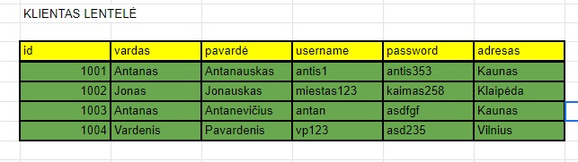
- Geltoni yra stulpeliai, žalios yra eilutės. Stulpeliuose surašome kokius "dalykus" gali turėti tas objektas. Tai šiuo atveju ką gali turėti Klientas - tai id, vardą, pavardę ir t.t. - tai turėtų atsispindėti ir Klientas klasėje Javoje. Žaliose eilutėse tai yra surašyti visi Klientai - šiuos klientus esant reikaluj programoje galima gauti iš duomenų bazės į ArrayList'ą ir su jais atlikti veiksmus.
- Toliau, galime pasižiūrėti dar į Prekės lentelės pavyzdį, jog užtvirtinti:
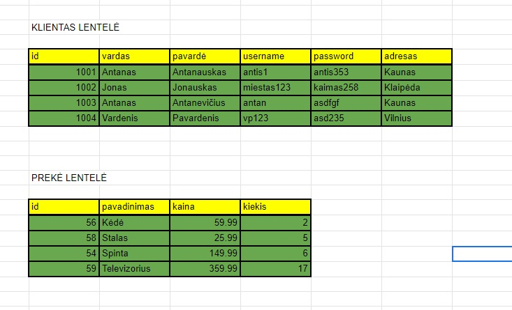
- Žinoma tik tokios sistemos bei tokios duomenų bazės neužtektų. Kadangi yra pilna ir kitų "sisteminių" objektų, kurie palaiko sistemą, nors gal ir nėra realūs/fiziniai objektai.
- Kad būtų paprasčiau, panaudokime vėl tą patį parduotuvės pavyzdį ir kaip dėl tokių dalykų kaip Užsakymai? Jie taip pat gali turėti kelis informacijos vienetus kaip kad kuriam klientui, kokias prekes, kokiu adresu, ar jau nusiųstas ir t.t., tad derėtų susikurti Užsakymai Klasę ir Lentelę (Table). Toliau, Adresas taip pat gali turėti kelis kintamuosius (gatvė, namo numeris, buto numeris, miestas, šalis, t.t.), tad jį irgi reikėtų išskirti į atskirą Klasę ir Lentelę. Taip pat dar ir realūs objektai, apie kuriuos kaip klientai gal nepagalvojame: Sandėlio klasė ir lentelė, Darbuotojo klasė ir lentelė, Automobilių (pristatymo) klasė ir lentelė, Apmokėjimų sistema ir t.t. Tad pilnoje sistemoje bus gan nemažai klasių ir lentelių, po truputį link to ir bandysime judėti.
- Šiandien pasistengsime pasižiūrėti kaip tinkamai sukurti lenteles duomenų bazėje, kadangi schema nupiešta Excelyje toli gražu nėra duomenų bazė, nors ir vizualiai lenteles atvaizduoti tinka tobulai.
PhpMyAdmin programos paleidimas
- Norint paleisti PhpMyAdmin programą, reikia spausti ant WAMP ikonos (apatiniame kairiame kampe, kur visos ikonos) kairį pelės klavišą ir tada pasirinkti PhpMyAdmin. Rinkitės 5.1.1 versiją.
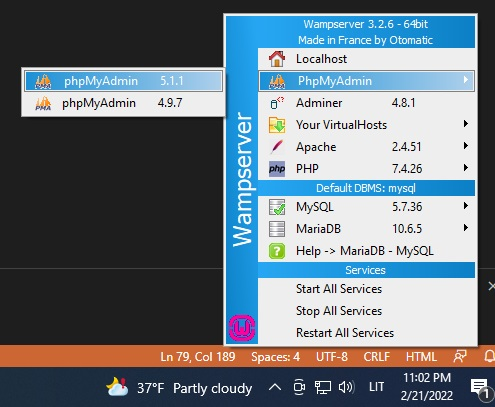
- Turėtų atidaryti naršyklės langą, kuriame yra prisijungimas į PhpMyAdmin. Iš anksto sukurtas vartotojas yra root ir tuščias slaptažodis. Į username įveskite "root", o slaptažodį palikite tuščią ir spauskite "Go".
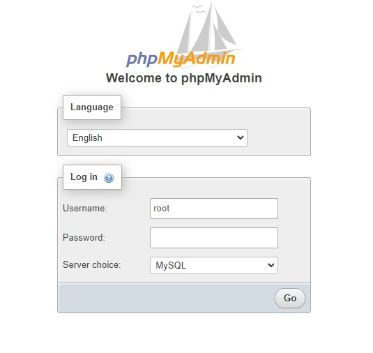
- Jus turėjo prijungti į PhpMyAdmin įrankį. Raudonai pažymėtoje vietoje (paveiksliuky) yra jūsų duomenų bazės. Spauskite "New" norėdami sukurti naują. Kiekvienam projektui turėtų būti atskira duomenų bazė.
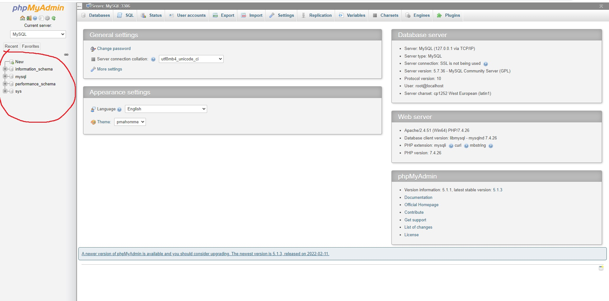
- Kai paspaudžiate "New" išmeta naujus pasirinkimus. Tuščiame laukelyje įrašykite duomenų bazės pavadinimą, o pasirinkime pasirinkite "utf8_general_ci". Tai yra teksto koduotė, ši yra viena iš standartinių, nebent būtų iš anksto žinoma, kad dirbama su tam tikros lokalės ir tik su tos lokalės tekstu.
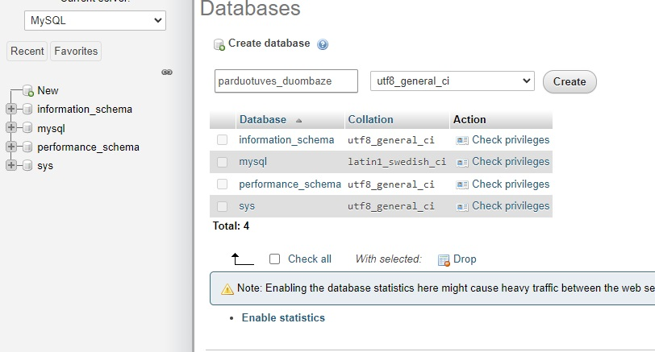
- Spaudžiate "Create" ir sukuria jums duomenų bazę. Tiesa, turėkite omenyje, jog duomenų bazėje vardai yra rašome "snake case" pavidalu. Tai yra, visi žodžiai rašomi mažosžiomis raidėmis, o vietoj tarpų dedamas brūkšniukas apačioje. Pavyzdžiui: kliento_adresas. Taip pat, lietuviškų raidžių pavadinimams nenaudotume (tačiau kaip kintamūjų reikšmės gali būti)
- Kai sukuriate duomenų bazę, iš karto jums išmeta pasirinkimą sukurti lentelę, kadangi duomenų bazė yra tuščia. Tą ir padarykime, sukurkime Klientas lentelę. Tuščiame laukelyje prie "Name" rašome lentelės pavadinimą, tai "klientas", o prie "Number of columns" turime įrašyti kiek stulpelių bus lentelėje (kiek kintamųjų turės klientas). Klientas turi 6 stulpelius/kintamuosius: id, vardas, pavardė, username, password, adresas. Todėl įrašome 6 ir spaudžiame "Go", jeigu vėliau atsirastų papildomų kintamųjų, visada galima pridėti papildomus stulpelius į lentelę.
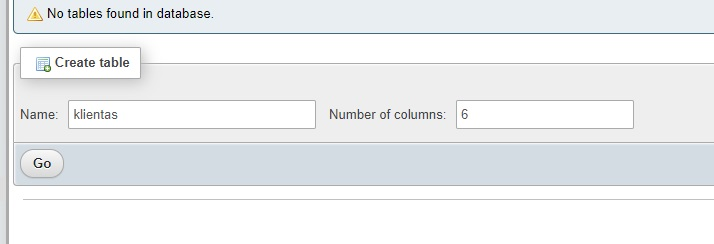
Lentelės kūrimas
- Paspaudus "Go" atidaro langą su daug tekstinių laukelių, kuris atrodo maždaug štai taip:
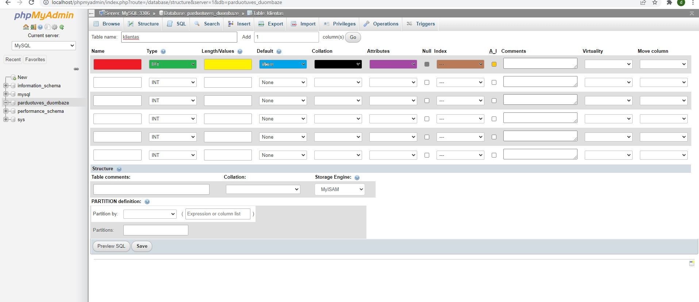
- Kiekviena eilutė yra skirta vienam stulpeliui. Kitaip sakant, pirmoje eilutėje turi būti visi id kintamojo/stulpelio nustatymai. Antroje eilutėje turi būti visi vardas stulpelio/kintamojo nustatymai ir t.t.
- Taigi, paveiksliukyje spalvomis sužymėti id stulpelio nustatymai.
- Raudonai nuspalvintas teksto laukelis yra stulpelio/kintamojo pavadinimas, tai šiuo atveju "id"
- Žaliai nuspalvintas laukelis yra duomenų tipas - kokio duomenų tipo tas kintamasis. Tai šiuo atveju "id" galima daryti skaičium arba tekstu. Paspaudę ant pasirinkimo, pamatysime, jog yra nemažai skirtingų duomenų tipų. Realiesiems skaičiams naudosime "DOUBLE", bet galėsime pabandyti ir su kitais. Tekstui dažniausiai naudosime VARCHAR, o sveikiems skaičiams priklausomai nuo jų dydžio. Taigi id galime pradžiai palikti INT
- Toliau, geltona spalva nuspalvintas laukelis yra Ilgio/Limito laukelis. Jame nurodytume to kintamojo maksimalų limitą. Jeigu tai tekstas, tai nusakytume kiek maksimaliai raidžių/simbolių gali jame būti. Pavyzdžiui, įrašę 30 nusakytume, kad tekste gali būti maksimaliai 30 raidžių. Jeigu tai sveikas skaičius, tai nusakytume, kiek skaitmenų gali būti jame, pvz. jei įrašome 5, tai maksimalus skaičius gali būti iš 5 skaitmenų. O realiem skaičiam galim nurodyti maksimalų skaitmenų skaičių prieš kablelį ir po kableliu. Pvz., 7,2 reikštų, jog prieš kablelį iš viso maksimaliai gali būti 7 skaičiai, o po kablelio maksimaliai du (suapvalins jei daugiau)
- Taigi, id galime nustatyti 5 ilgį, taip nusakytume, jog ID galės būti maksimaliai iš penkių skaitmenų. To, žinoma, nereikia daryti kiekvienam id ir kiekvienam projektui, kadangi tai tiesiog priklausytų nuo įmonės sudarytos sistemos (kokius id jie naudoja), na o mūsų atveju - nuo užduočių sąlygos.
- Toliau, mėlyname pasirinkime tai "Išankstinė reikšmė", tai reikšmė, kurią įrašytų automatiškai, jeigu stulpelis buvo paliktas tuščias.
- Juodai nuspalvinta yra teksto koduotė. Esant reikalui, galima nustatyti stulpelį skirtingos teksto koduotės nei duomenų bazė. (to neturėtume daryti
- Violietine spalva nuspalvinta "Attributes" skiltis. Paspaudę pasirinkimą, pamatysite keturis pasirinkimus. Tačiau, pagrindinis kurį naudosime tai yra UNSIGNED. Jis reiškia, jog skaičius negali būti neigiamas. Tai, pavyzdžiui, jeigu žinome, jog tie kintamieji negalės būti neigiami, parinkę juos UNSIGNED sutaupome atminties vietos ir taip padvigubiname esamo duomenų tipo limitą. Tad, pavyzdžiui id stulpeliui tikrai galėtume pritaikyti "UNSIGNED" atributą, kadangi id niekada netūrėtų būti neigiamas. (nebent kažkokioje labai keistoje sistemoje)
- Pilkai pažymėtas yra "Null" laukelis. Jeigu pažymėsite šią varnelę, tai reiškia, jog stulpelis gali būti tuščias, jeigu nepažymėsite - tai reiškia, jog stulpelis privalo būti užpildytas ir kitaip sakant negalime sukurti Klientas objekto be šio stulpelio. Kadangi id negali būti tuščias, tai id stulpeliui to nežymėtumėme. Bet, tarkim, jei turėtume stulpelį "antras_vardas", tai jam tikrai galėtume žymėti "null", kadangi ne visi Klientai privalo turėti antrą vardą.
- Ruda spalva yra "Indeksas", jis automatiškai atsiras dėl sekančio laukelio, o pakol kas daugiau apie indeksus nereikėtų žinoti.
- Paskutine, oranžine, spalva yra nuspalvintas AUTO_INCREMENT laukelis. Šį laukelį pažymėtume, jeigu stulpelis/kintamasis yra identifikacinis stulpelis ir jeigu, kai pridedame naują Klientą, norėtume, kad jo id būtų automatiškai vienu didesnis nei paskutinio kliento. Pavyzdžiui, jeigu pažymėsime AUTO_INCREMENT varnelę, mūsų id stulpelis taps pagrindiniu (to ir norime) bei jeigu paskutinis Klientas yra su ID 1005, tai kai pridėsime naują klientą, jam ID nereikės įrašinėti, o duomenų bazė žinos, jog norime, kad jis būtų 1006. (Automatiško pliusavimo gal ir norime ne visada, tačiau bent jau pradžioje tai visada darysime, kad id stulpeliai yra auto_increment)
- Toliau, kiti, neužspalvinti, laukeliai yra mums neaktualūs.
- Taigi, kai į visus laukelius surašome/parenkame atitinkamas reikšmes, turėtume bent id stulpeliui gauti kažką panašaus į:
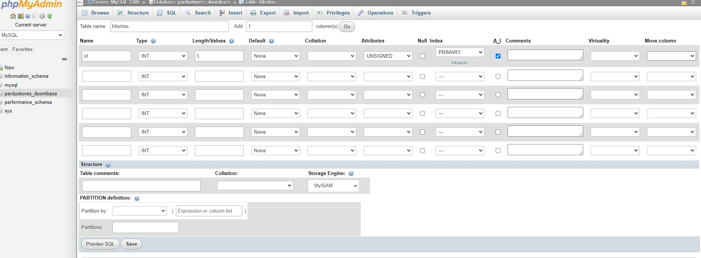
- Toliau, analogiškai reikia užpildyti ir visiems kitiems stulpeliams.
- Sekantis stulpelis yra vardas. Duomenų tipą parinkime varchar, kadangi tai yra tekstas. Vardui duokime 30 raidžių limitą. Default nieko nedarome, kadangi neįvedus vardo neturėtų kažkokį išankstinį suvesti. Koduotės nekeičiame, atributų taip pat negalime uždėti, kadangi unsigned tik skaičiams. Null nežymime, kadangi vardas neturėtų būti tuščias ir auto_increment taip pat nežymime, nes tik vienas stulpelis gali būti identifikacinis.
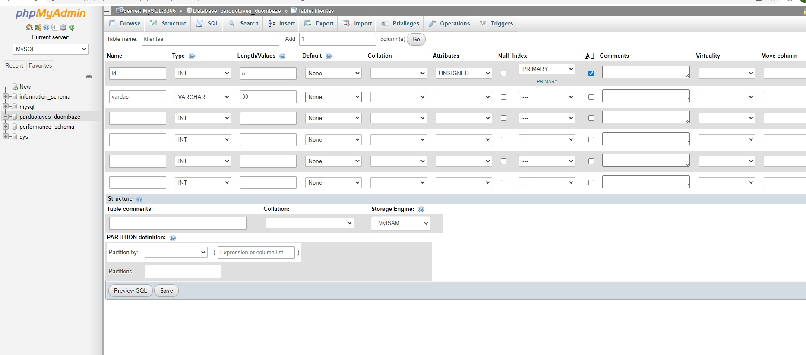
- Taip pat ir pavardei.
- Username taip pat yra tekstas, būtų galima duoti kažkokį kitą limitą, tačiau taip pat paliekame 30 raidžių. Slaptažodžiui taikome tą patį. Na, o adresui tebūnie pritaikome 50 raidžių limitą.
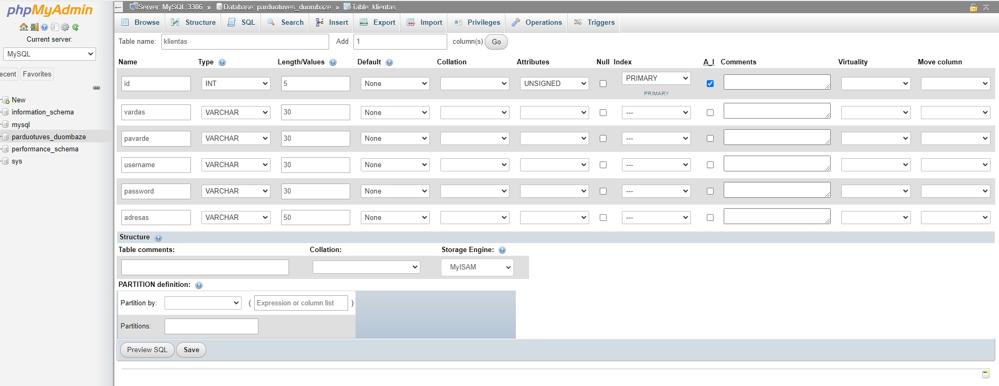
- Spaudžiame "Save" ir turime savo pirmą lentelę. Dabar galima pridėti įrašus/objektus į lentelę arba kitaip sakant dabar galima įdėti Klientus į šią lentelę. Spaudžiame ant "Insert" skilties.
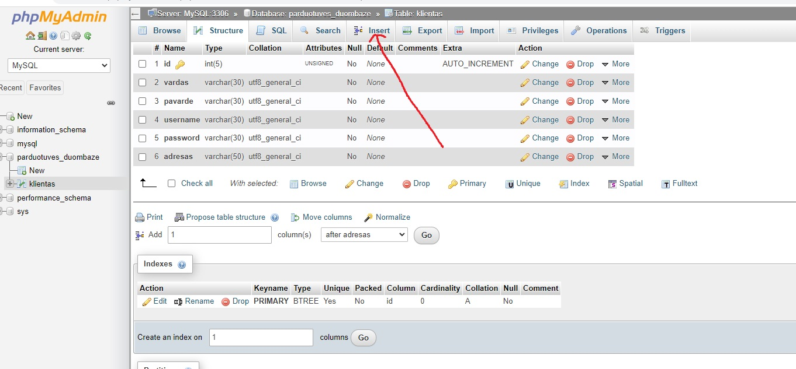
- Naujai atsidariusiame lange, kur yra "Continue insertion with 2 rows" pakeiskite į 1 rows, jog nerodytų dviejų įrašų be reikalo.
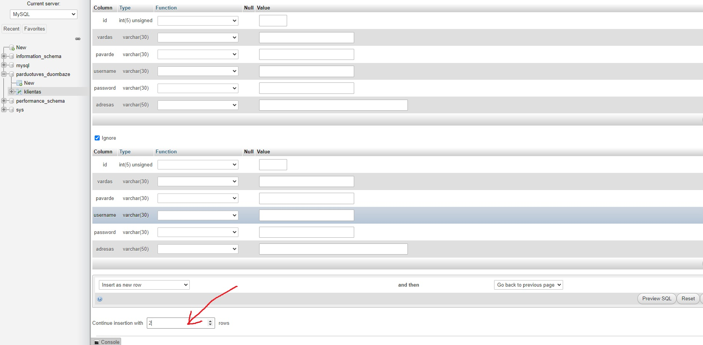
- Toliau, prie kiekvieno laukelio surašykite atitinkamas Kliento reikšmes. (jas galite sugalvoti arba nurašyti iš sąlygos) id laukelį paliekame tuščią, kadangi jį daro automatiškai. Spaudžiame "Go".
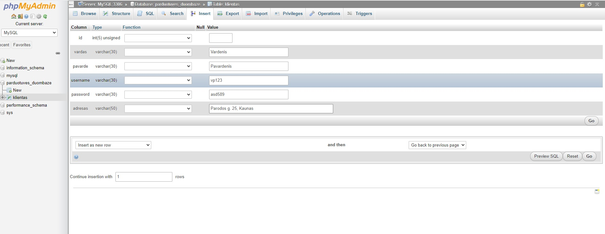
- Išmeta štai tokį langą:
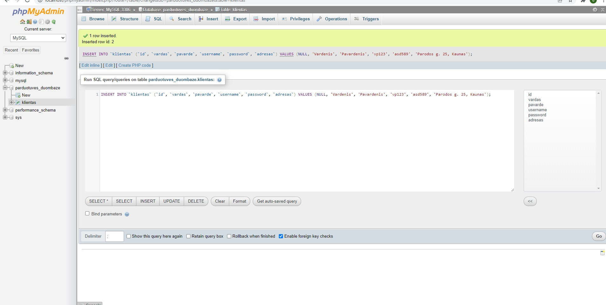
- Antrą kartą spausti Go NEREIKIA. Viršuje rašo, jog "1 rows inserted", reiškias jas jau įdėjo. Čia dabar rodo SQL kodą, kuris būtent ir atlieka įdėjimą. Tai ką mes surašėme į laukelius, PhpMyAdmin nuskaitė ir sugeneravo į SQL kodą. Kai kūrėme lentelę, tai vyko taip pat tokiu pat principu: mes surašėme kiek bus stulpelių ir jų parametrus į laukelius, PhpMyAdmin nuskaitė ką mes surašėme į laukelius ir sugeneravo SQL kodą, kuris sukūrė duomenų bazę. Na, o mums, kaip programuotojams, tai derėtų ir išmokti kaip patiems parašyti SQL kodą, o ne tik su PhpMyAdmin generavimu.
- Taigi, "Go" spausti nereikia, galite grįžti į "Browse" (viršutinėje meniu juostoje) ir pamatyti, jog į jūsų lentelį įdėjo naują įrašą (naują klientą), kurį jūs įvedėte prieš tai.
MySQL Kodas
Lentelės kūrimas.
- Norint sukurti lentelę, reikia pradėti kodą užrašu:
CREATE TABLE IF NOT EXISTS LENTELĖS_PAVADINIMAS ()
- LENTELĖS_PAVADINIMAS - tai žinoma jūsų Lentelės pavadinimas. CREATE TABLE, tai komanda, kuri kuria lentelę. IF NOT EXISTS tai tos komandos papildinys, kuris sako, jog sukurti lentelę, jei tokios dar nėra (tai apsaugo nuo esamos lentelės ištrynimo/perrašymo). O skliaustų viduje paliksime tuščios vietos ir ten aprašysime visus stulpelius.
- Tiesa, MySQL kodą galima rašyti Visual Studio Code programoje, internetiniuose compileriuose arba tikriausiai patogiausia, jog viskas vienoje vietoje, tai galima ir PhpMyAdmin programoje. Spaudžiame ant duomenų bazės kairėje meniu skiltyje ir tada spaudžiame "SQL" skiltį viršutinėje meniu juostoje.
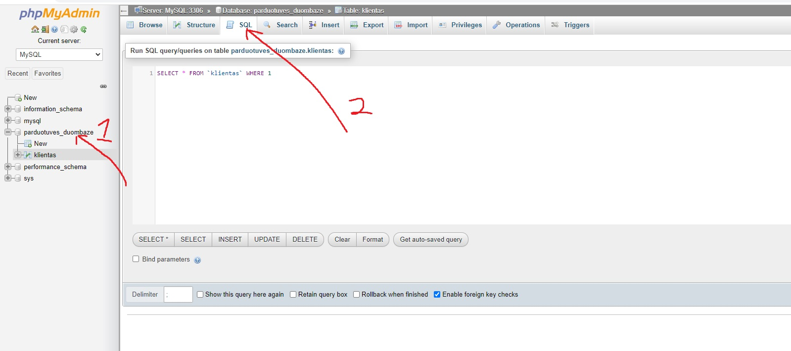
- Atsidaro SQL kodo redaguoklė. Jame galime rašyti SQL kodą ir jį paleisti ant mūsų duomenų bazės. Tad, nutriname kas įrašyta ir įrašome savo lentelės sukūrimo pradžią. Tik, kadangi jau Klientas lentelė egzistuoja, tai kodu sukursime Prekė lentelę.
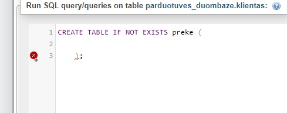
- Toliau, skliaustelių viduje turime rašyti po vieną kintamąjį, taigi galime susioarganizuoti, jog viena eilutė - vienas kintamasis. Kaip ir Javoje.
- Norint "sukurti" stulpelį, rašome stulpelio pavadinimą, tada stulpelio duomenų tipą, dedame skliaustelius ir skliausteliuose įrašome limitą/ilgį, o po to surašome atributus, jeigu stulpelis turi, atributai eina iš eilės tokia eile: NOT NULL, DEFAULT, AUTO_INCREMENT, ir toliau eina column_constraints (dar jų nemokame). Visą šabloną, galima užrašyti taip:
stulpelio_pavadinimas duomenų_tipas(ilgis) [UNSIGNED] [NOT NULL] [DEFAULT value] [AUTO_INCREMENT] column_constraint;, kur atributai laužtiniuose skliaustuose yra pasirinktinai. (nebūtinai kiekvienam stulpeliui) - Pritaikę šį šabloną, pabandykime užrašyti Prekės id stulpelį. P.S. PhpMyAdmin programoje Null reikia pažymėti, o SQL kode kaip tik reikia pasakyti jeigu NOT NULL (ne NULL), o jeigu nepasakome tai reiškias, jog gali būti ir NULL.
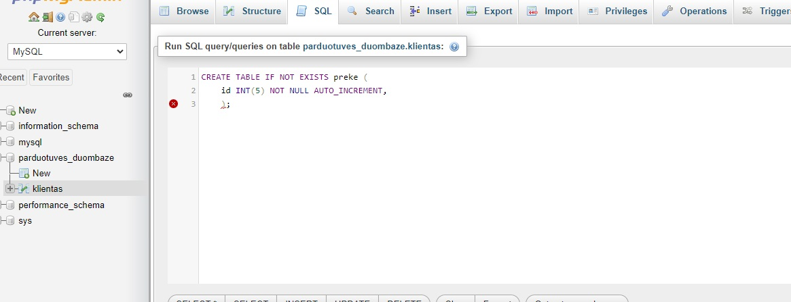
- Toliau, padarome visiems kitiems stulpeliams. Stulpelių/kintamųjų užrašymus atskiriame kableliu ir darome iš naujos eilutės. Kainą darysime UNSIGNED, kadangi prekės su neigiama kaina negalės būti. Taip pat padarysime, jog jeigu prekės kiekio nėra įvesto, tai defaultinis (išankstinis) būtų 0. Surašę visus stulpelius/kintamuosius, spaudžiame "Go".
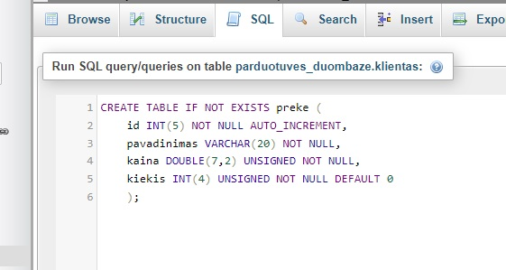
- Paspaudę "Go" turėtume gauti error'ą
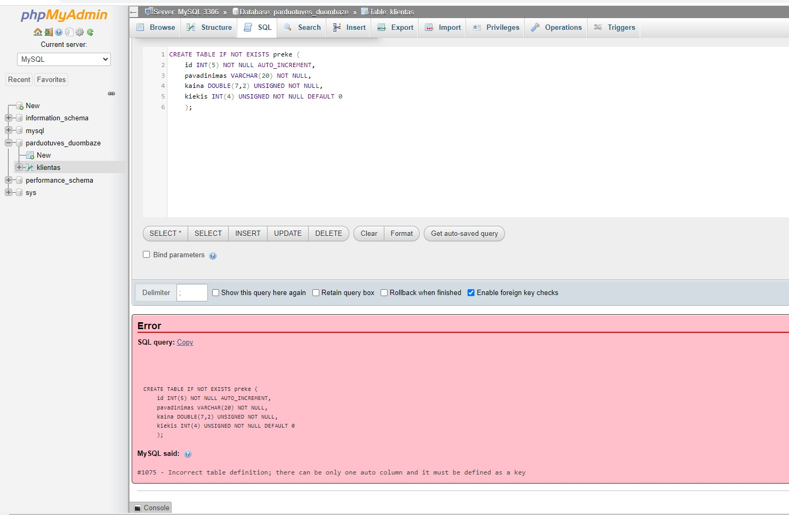
- Jį sutvarkysime nustatę id stulpelį "PRIMARY KEY", pakol kas apie raktus ir PRIMARY KEY dar per daug nesiglinsime, tiesiog iš pradžių reikėtų žinoti, jog indentifikacinius stulpelius reikia nustatyti primary key. Tad po kintamųjų įrašome PRIMARY KEY(stulpelio_pavadinimas) ir paspaudžiame go
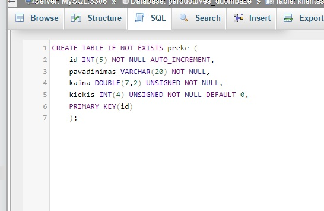
<p> yra pastraipos žymė